با درمانگران ما آشنا شویدMeet our counselors
تیمی از روانشناسان دارای پروانهی فعالیت، هر کدام با تخصص و تجربهای متفاوت، آمادهی همراهی با شما هستند.A team of licensed psychologists, each with their own specialty and experience, ready to support you.
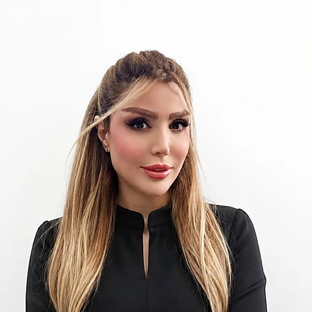
دکترای روانشناسی سلامت، با فعالیت در زوجدرمانی، مشاوره پیش از ازدواج، مشاوره فردی و درمان افسردگی و اضطراب. مترجم کتاب «۱۰۰ روش برای تغییر زندگی» و فعال در رویکردهای شناختیرفتاری (CBT) و طرحوارهدرمانی.PhD in Health Psychology, working in couples therapy, premarital counseling, individual counseling, and treatment of depression and anxiety. Translator of "100 Ways to Change Your Life," working with CBT and schema therapy approaches.
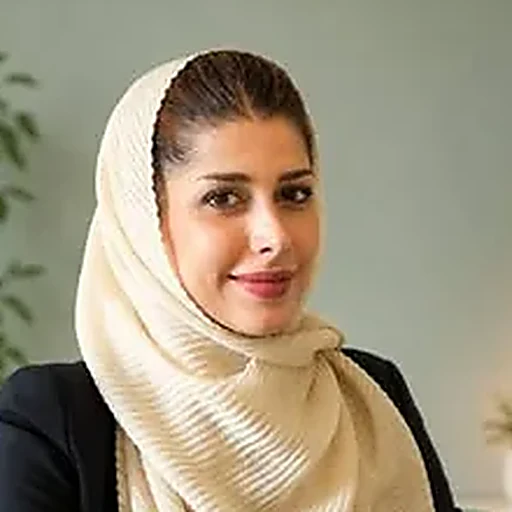
با بیش از هفت سال تجربه در رواندرمانی بزرگسالان، زوجها و خانوادهها؛ با رویکردهای PTC (پارادوکسیکال)، EFT و CBT در درمان اضطراب، تروما، اختلالات جنسی و مشکلات زوجین فعالیت میکند.With over seven years of experience in psychotherapy for adults, couples, and families, she works with PTC (Paradoxical Therapy), EFT, and CBT approaches to treat anxiety, trauma, sexual difficulties, and couples' issues.
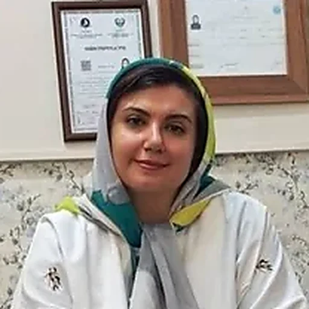
با سابقه در مشاوره خانواده و رواندرمانی کودک و نوجوان در کلینیکهای تخصصی و خانههای سلامت شهرداری تهران، و مدرس کارگاههای فرزندپروری و مهارتهای زندگی. نویسندهی کتاب راهنمای جامع فرزندپروری.With experience in family counseling and child/adolescent psychotherapy at specialized clinics and Tehran municipality health centers, and an instructor of parenting and life-skills workshops. Author of a comprehensive parenting guide book.
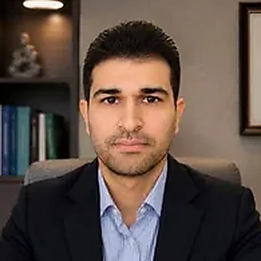
با نزدیک به ۱۵ سال سابقه درمانگری، بهویژه در حوزه مشکلات خانوادگی، و فعالیت در زمینه مشکلات تحصیلی و شغلی. خانوادهدرمانگر با رویکرد ساختاری مینوچین و ACT برای تعارضات زناشویی.With nearly 15 years of experience in psychotherapy, especially with family issues, and work in academic and career counseling. A family therapist using Minuchin's structural approach and ACT for marital conflict.
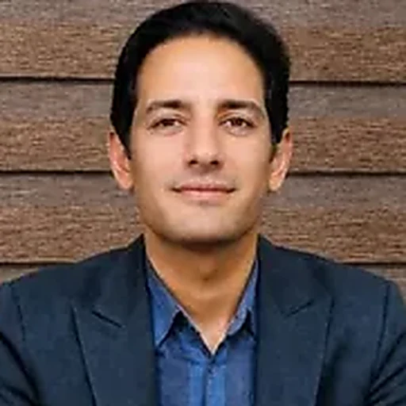
با دکترای تخصصی مشاوره از دانشگاه خوارزمی تهران، سالها تجربه در مشاوره مدارس، خانوادهدرمانی و رواندرمانی فردی، و مدرس دانشگاه در حوزه مشاوره و رواندرمانی. مترجم چند کتاب تخصصی در این حوزه.With a PhD in Counseling from Kharazmi University, Tehran, years of experience in school counseling, family therapy, and individual psychotherapy, and a university instructor in counseling and psychotherapy. Translator of several specialized books in the field.
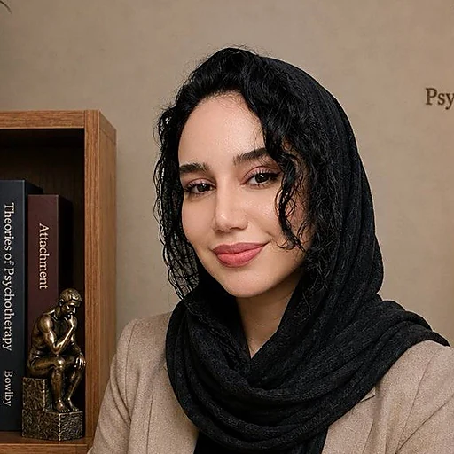
با دکترای تخصصی روانشناسی بالینی و سالها سابقه تدریس در دانشگاههای علوم پزشکی دزفول و تهران، در حوزه رواندرمانی فردی و زوجدرمانی بزرگسالان با رویکرد طرحوارهدرمانی فعالیت میکند.With a PhD in Clinical Psychology and years of teaching at medical universities in Dezful and Tehran, she works in individual and couples therapy for adults using the Schema Therapy approach.
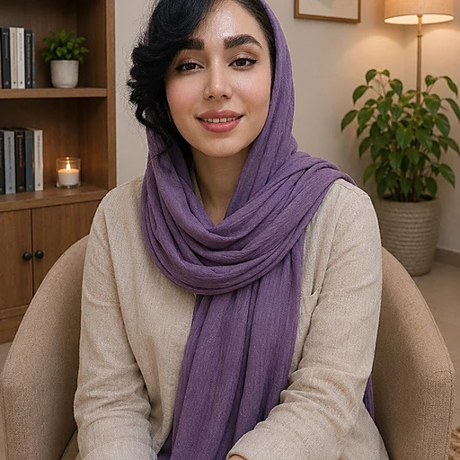
با سابقه چندین سال فعالیت در کلینیکهای تخصصی و تدریس در دانشگاه علوم پزشکی، در حوزه رواندرمانی نوجوانان و بزرگسالان با رویکرد طرحوارهدرمانی و درمان شناختیرفتاری فعالیت میکند.With several years of experience in specialized clinics and teaching at a university of medical sciences, she works in psychotherapy for adolescents and adults using Schema Therapy and Cognitive-Behavioral Therapy.
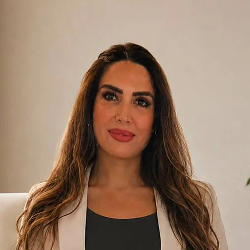
رواندرمانگر بزرگسال با رویکرد تحلیلی. کار او با کسانی است که با اضطراب، افسردگی، دشواری در تنظیم هیجان، الگوهای دلبستگی ناایمن، تعارضهای بینفردی و مسائل مربوط به ساختار شخصیت وارد درمان میشوند. مسیر حرفهایاش از طرحوارهدرمانی آغاز شد و به منتالیزیشن و سنت تحلیلی روابط ابژه رسید.An adult psychotherapist working analytically. She sees people who come to therapy with anxiety, depression, difficulty regulating emotion, insecure attachment patterns, interpersonal conflict, and questions about personality structure. Her practice began in schema therapy and moved through mentalization into the object-relations analytic tradition.
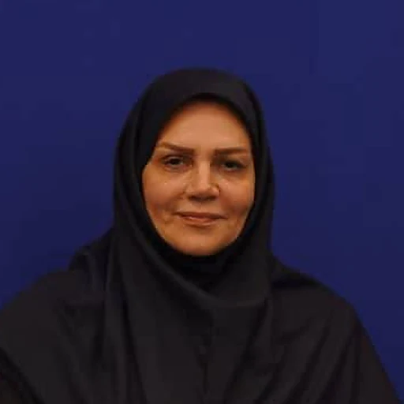
عضو هیأت علمی دانشگاه آزاد اسلامی و دارای پروانه تخصصی از سازمان نظام روانشناسی و مشاوره ایران، با سالها تجربه در رواندرمانی و خدمات بالینی. فعالیت او بر زوجدرمانی، خانوادهدرمانی و توسعه فردی متمرکز است و بر روشهای مبتنی بر شواهد تکیه دارد. مؤلف و مترجم کتاب در حوزه روانشناسی.A faculty member at Islamic Azad University, licensed by Iran's Psychology and Counseling Organization, with years of experience in psychotherapy and clinical services. Her work centers on couples therapy, family therapy, and personal development, grounded in evidence-based methods. She has authored and translated books in the field of psychology.
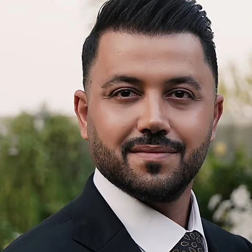
دانشآموخته روانشناسی بالینی و کارشناس ارشد روانشناسی از دانشگاه تهران، مدرس دانشگاه آزاد اراک و عضو بنیاد ملی نخبگان ایران. تمرکز او بر اضطراب، افسردگی و مسائل فردی و همچنین ازدواج موفق و روابط زناشویی پایدار است؛ با بیش از ۱۶٬۰۰۰ جلسه مشاوره آنلاین طی پنج سال.A graduate of clinical psychology with a Master's in Psychology from the University of Tehran, a lecturer at Azad University of Arak, and a member of Iran's National Elites Foundation. His focus is anxiety, depression, and individual concerns, alongside healthy marriage and lasting couple relationships — with more than 16,000 online counseling sessions delivered over five years.
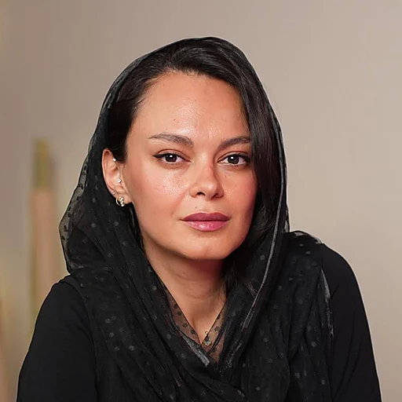
دکترای تخصصی روانشناسی عمومی، با چهار سال کار در کلینیک بستری اعصاب و روان و بیش از هفت سال رواندرمانی فردی. تمرکز او بر روابط عاطفی — حل تعارض، خیانت و جدایی — و توسعه فردی شامل عزتنفس، کنترل خشم، اضطراب و سوگ است، با رویکرد شناختیرفتاری (CBT).A PhD in General Psychology, with four years in an inpatient psychiatric clinic and more than seven years of individual psychotherapy. Her focus is romantic relationships — conflict resolution, infidelity, and separation — and personal development including self-esteem, anger management, anxiety, and grief, working with a Cognitive-Behavioral (CBT) approach.
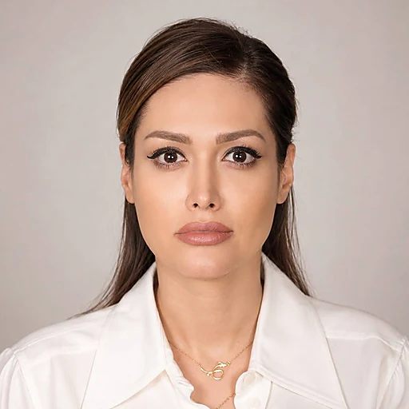
دکترای تخصصی روانشناسی از دانشگاه علوم و تحقیقات تهران، مدرس دانشگاه و عضو انجمن روانشناسان آمریکا (APA)، با فعالیت حرفهای از سال ۱۳۹۰. کار او بر رواندرمانی فردی بزرگسالان، روابط عاطفی و بینفردی، مشاوره پیش از ازدواج و توانمندسازی زنان متمرکز است؛ با رویکرد روانپویشی و منتالیزیشن.A PhD in Psychology from Science and Research University of Tehran, a university lecturer and member of the American Psychological Association (APA), in practice since 2011. Her work centers on individual adult psychotherapy, romantic and interpersonal relationships, premarital counseling, and women's empowerment, using psychodynamic and mentalization-based approaches.
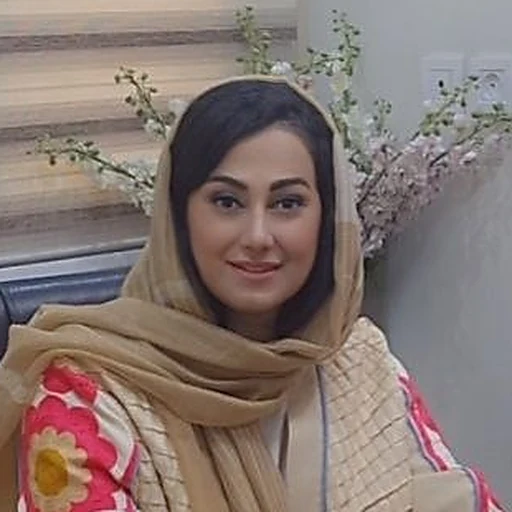
دارای پروانه اشتغال سازمان نظام روانشناسی و مشاوره، با بیش از ۷۶۰ ساعت کارآموزی تخصصی. کار او بر زوجدرمانی، مشاوره ازدواج و پیش از ازدواج متمرکز است و در کنار آن در روانشناسی صنعتی و سازمانی نیز فعالیت میکند. باور او این است که هر رابطهای ارزش یک فرصت دوباره را دارد.A psychologist licensed by Iran's Psychology and Counseling Organization, with over 760 hours of specialist clinical training. Her work centers on couples therapy, marriage and premarital counseling, alongside work in industrial and organizational psychology. She believes every relationship deserves a second chance.
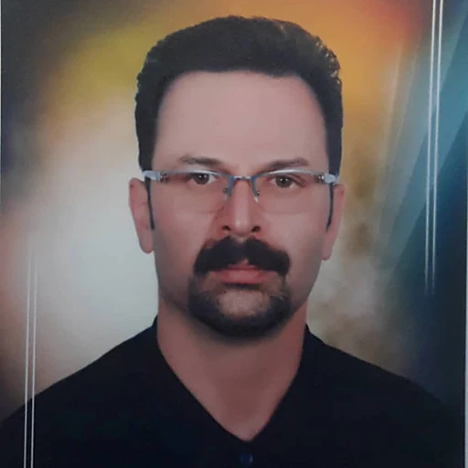
دارای پروانه اشتغال تخصصی سازمان نظام روانشناسی. پنج سال مشاور مرکز مشاوره وابسته به نیروی انتظامی استان همدان و همکار مراکز مشاوره فرزانه، ساحل و معنای زندگی. کار او بر روابط بینفردی، مشاوره پیش از ازدواج، زوج و مشاوره شغلی متمرکز است.A psychologist licensed by Iran's Psychology and Counseling Organization. He spent five years as a counselor at the police-affiliated counseling center in Hamedan province and has worked with the Farzaneh, Sahel and Ma'na-ye Zendegi counseling centers. His work centers on interpersonal relationships, premarital and couples counseling, and career counseling.
دکتر سارا فتاحیDr. Sara Fattahi
روانشناس بالینی، دکترای روانشناسی سلامتClinical Psychologist, PhD in Health Psychology
سارا فتاحی دکترای روانشناسی سلامت دارد و در حوزهی مشاوره فردی و زوجی، مشاوره پیش از ازدواج، و درمان افسردگی و اضطراب فعالیت میکند. او بهتازگی کتاب «۱۰۰ روش برای تغییر زندگی» را در زمینهی ارتقای سلامت جسم و روان ترجمه کرده است. به باور او، رواندرمانی سفری به درون خود است و او در این مسیر همراه و راهنمای مراجعان خواهد بود. بهعنوان درمانگر شناختی-رفتاری، از تکنیکهای شناختی و رفتاری برای کمک به افرادی که با اضطراب یا افسردگی دستوپنجه نرم میکنند استفاده میکند؛ همچنین از رویکرد طرحوارهدرمانی برای شناخت بهتر خود و حل تعارضهای ریشهدار دوران کودکی بهره میگیرد.Sara Fattahi holds a PhD in Health Psychology and works in individual and couples counseling, premarital counseling, and the treatment of depression and anxiety. She recently translated the book "100 Ways to Change Your Life," focused on improving physical and mental wellbeing. She sees psychotherapy as a journey inward, and walks alongside her clients as a guide on that path. As a cognitive-behavioral therapist, she uses cognitive and behavioral techniques to help people working through anxiety or depression, and also draws on schema therapy to help clients understand themselves better and resolve deep-rooted conflicts from childhood.
- زوجدرمانی (مشاوره پیش از ازدواج، طلاق، خیانت، حل تعارض)Couples therapy (premarital counseling, divorce, infidelity, conflict resolution)
- مشاوره فردی و مرتبط با مهاجرت (افسردگی، افکار خودکشی، عزتنفس پایین، اضطراب مزمن، پرخاشگری، وسواس و سوگ)Individual and migration-related counseling (depression, suicidal ideation, low self-esteem, chronic anxiety, anger, OCD, and grief)
- مشاوره روابط بینفردی (با شریک عاطفی، خانواده، دوستان)Interpersonal relationship counseling (romantic partners, family, friends)
- درمان شناختیرفتاری (CBT)Cognitive Behavioral Therapy (CBT)
- طرحوارهدرمانی (Schema Therapy)Schema Therapy
- کارشناسی روانشناسی بالینیBA in Clinical Psychology
- کارشناسی ارشد روانشناسی بالینیMA in Clinical Psychology
- دکترای تخصصی روانشناسی سلامتPhD in Health Psychology
- دارای پروانه فعالیت، سازمان نظام روانشناسی و مشاوره — شماره ۳۰۹۸۰Licensed by Iran's Psychology and Counseling Organization — No. 30980
- سالها سابقهی فعالیت حرفهای در رواندرمانیYears of professional psychotherapy practice
- مدرس دانشگاهUniversity instructor
- فعالیت بهعنوان روانشناس در بیمارستان روانپزشکیWorked as a psychologist at a psychiatric hospital
- مترجم کتاب در حوزهی روانشناسیTranslator of a book in the field of psychology
دکتر سپیده وحید هرندیDr. Sepideh Vahid Harandi
روانشناس بالینی، دکترای روانشناسی سلامتClinical Psychologist, PhD in Health Psychology
اینجانب سپیده وحید هرندی با تکیه بر تحصیلات و سوابق حرفهای خود، روانشناس بالینی دارای دکترای روانشناسی سلامت با بیش از هفت سال تجربه در ارائه خدمات رواندرمانی به بزرگسالان، زوجها و خانوادهها هستم. تجربه کاری من در کلینیکهای تخصصی شامل ارزیابی روانشناختی، مصاحبه تشخیصی، فرمولبندی مورد، طراحی و اجرای برنامههای درمانی فردمحور و نگارش مستندات بالینی مطابق اصول اخلاق حرفهای است. در درمان اختلالات اضطرابی، افسردگی، وسواس، تروما، اختلالات شخصیت، اختلالات خوردن و مشکلات جنسی فعالیت داشتهام و از رویکردهایی مانند درمان پارادوکسیکال (PTC)، درمان هیجانمدار (EFT)، درمان شناختیرفتاری (CBT) و تکنیکهای مسترز و جانسون در سکستراپی استفاده میکنم. علاوه بر فعالیت بالینی، در حوزه پژوهش نیز فعال بوده و مقالات علمی در زمینه سلامت روان، رفتارهای سلامت و روانشناسی منتشر کردهام. هدف من ارائه خدمات مبتنی بر شواهد، ایجاد رابطه درمانی مؤثر و کمک به مراجعان برای دستیابی به بهبود پایدار در سلامت روان و کیفیت زندگی است.I am Sepideh Vahid Harandi, a clinical psychologist with a PhD in Health Psychology and more than seven years of experience providing psychotherapy to adults, couples, and families. My clinical work has included psychological assessment, diagnostic interviewing, case formulation, designing and delivering individualized treatment plans, and writing clinical documentation in line with professional ethics. I have worked with anxiety disorders, depression, OCD, trauma, personality disorders, eating disorders, and sexual difficulties, using approaches such as Paradoxical Therapy (PTC), Emotion-Focused Therapy (EFT), Cognitive-Behavioral Therapy (CBT), and the Masters and Johnson technique in sex therapy. Alongside clinical work, I am active in research and have published scientific articles on mental health, health behavior, and psychology. My goal is to provide evidence-based care, build an effective therapeutic relationship, and help clients achieve lasting improvement in mental health and quality of life.
- دکترای تخصصی روانشناسی سلامتPhD in Health Psychology
- کارشناس ارشد و کارشناس روانشناسی بالینیMaster's and Bachelor's degrees in Clinical Psychology
- دارای پروانه اشتغال از سازمان نظام روانشناسی و مشاوره ایرانLicensed by Iran's Psychology and Counseling Organization
- دوره تخصصی سوپروویژن و کارورزی با رویکرد PTC برای درمان اختلالات روانشناختی، دانشگاه تهرانSpecialized supervision & practicum course in the PTC approach for treating psychological disorders, University of Tehran
- درمان فردی هیجانمدار از انستیتو هیجانمدار ایرانIndividual Emotion-Focused Therapy training, Iran EFT Institute
-
گذراندن دورهها و کارگاههای تخصصی:Specialized courses and workshops completed:
- برگزاری کارگاه استرس و اضطراب، دانشگاه تربیت مدرسConducted a stress & anxiety workshop, Tarbiat Modares University
- گواهی داروشناسی مورد تایید وزارت علوم و تحقیقاتPsychopharmacology certificate approved by the Ministry of Science and Research
- کارگاه آموزشی اختلالات سوماتوفرم، مرکز تحقیقات روانتنی دانشگاه علوم پزشکی اصفهانSomatoform disorders workshop, Psychosomatic Research Center, Isfahan University of Medical Sciences
- دوره تخصصی سکستراپی مورد تایید وزارت علوم، دانشگاه تهرانSpecialized sex therapy training, approved by the Ministry of Science, University of Tehran
- دوره تخصصی تربیت زوجدرمانگر با رویکرد PTC مورد تایید وزارت علوم و تحقیقاتSpecialized couples-therapist training in the PTC approach, approved by the Ministry of Science and Research
- دوره تخصصی درمانگر برای اختلالات اضطرابی، وسواس و نشانههای بدنی به روش PTCSpecialized therapist training for anxiety disorders, OCD, and somatic symptoms using the PTC method
- دوره تخصصی درمانگر PTC برای ویژگیهای شخصیتی مشکلساز و اختلالات شخصیتSpecialized PTC therapist training for problematic personality traits and personality disorders
- دوره تخصصی کارورزی و سوپرویژن سکستراپی به روش PTCSpecialized sex-therapy practicum and supervision using the PTC method
- نشانهشناسی و تشخیص اختلالات روانی بر اساس DSM-5Symptomatology and diagnosis of mental disorders based on DSM-5
- مشاوره فردیIndividual counseling
- درمان اختلالات سایکوسوماتیک (روانتنی)Treatment of psychosomatic disorders
- درمان اختلالات جنسیTreatment of sexual disorders
- درمان اضطراب امتحان، پانیک و انواع فوبیاTreatment of exam anxiety, panic, and phobias
- زوجدرمانیCouples therapy
- درمان تروماTrauma therapy
- درمان استرس، افسردگی و اضطرابTreatment of stress, depression, and anxiety
- درمان وسواس فکری و عملیTreatment of obsessive-compulsive disorder
- درمان کماشتهایی و پُراشتهایی عصبیTreatment of anorexia and bulimia nervosa
- هراسهای اجتماعیSocial phobias
- درمان نشخوارهای فکریTreatment of rumination
- درمان لکنت زبان و تیکهای عصبیTreatment of stuttering and nervous tics
- درمان پارادوکسیکال (PTC)Paradoxical Therapy (PTC)
- درمان هیجانمدار (EFT)Emotion-Focused Therapy (EFT)
دکتر صفا مصطفیزادهDr. Safa Mostafazadeh
مشاور خانواده، درمانگر تخصصی کودک و نوجوانFamily Counselor, Child & Adolescent Therapy Specialist
دکتر صفا مصطفیزاده دکترای مشاوره دارد و از سال ۱۳۹۵ در حوزه مشاوره خانواده و رواندرمانی کودک و نوجوان در خانههای سلامت شهرداری تهران و کلینیکهای تخصصی روانشناسی فعالیت میکند. او نویسندهی کتاب راهنمای جامع فرزندپروری ویژهی مربیان و والدین است و بهعنوان مدرس، کارگاههای متعددی در زمینه فرزندپروری، مهارتهای زندگی کودک و نوجوان، و مدیریت فضای مجازی برای کودکان برگزار کرده است.Dr. Safa Mostafazadeh holds a PhD in Counseling and has worked since 2016 in family counseling and child/adolescent psychotherapy at Tehran municipality health centers and specialized psychology clinics. She is the author of a comprehensive parenting guide for caregivers and parents, and has taught numerous workshops on parenting, child and adolescent life skills, and managing children's use of digital spaces.
- رواندرمانی کودک و نوجوان، فرزندپروری و بازیدرمانیChild & adolescent psychotherapy, parenting, and play therapy
- تشخیص و درمان اضطراب، افسردگی، وسواس، بیشفعالی و اختلالات یادگیری در کودکانDiagnosis and treatment of anxiety, depression, OCD, ADHD, and learning disorders in children
- مشاوره پیش از ازدواج و زوجدرمانیPremarital counseling and couples therapy
- درمان شناختیرفتاری (CBT)Cognitive Behavioral Therapy (CBT)
- بازیدرمانی و برنامه مدیریت والدین (PMT)Play therapy and Parent Management Training (PMT)
- طرحوارهدرمانی و تحلیل رفتار متقابل (TA)Schema Therapy and Transactional Analysis (TA)
- دکتری مشاورهPhD in Counseling
- کارشناسی ارشد مشاوره خانوادهMA in Family Counseling
- دارای پروانه فعالیت، سازمان نظام روانشناسی و مشاوره — شماره ۱۳۴۹۸۴۷Licensed by Iran's Psychology and Counseling Organization — No. 1349847
- مشاور خانواده و رواندرمانگر کودک و نوجوان در خانههای سلامت شهرداری تهران (از سال ۱۳۹۵)Family counselor and child/adolescent psychotherapist at Tehran municipality health centers (since 2016)
- درمانگر کودک و نوجوان در کلینیک روانشناسی نارونChild & adolescent therapist at Narvan Psychology Clinic
- درمانگر کودک و نوجوان در کلینیک درمانی رضویChild & adolescent therapist at Razavi Clinic
- مشاور کودک و نوجوان در کلینیک آنلاین هرالیف (اپلیکیشن سلامت بانوان)Child & adolescent counselor at the Heralife online clinic (a women's health app)
- روانشناس مهدکودکها و پیشدبستانیهای منطقه ۱ تهرانPsychologist at daycares and preschools in Tehran's District 1
- مدرس کارگاههای فرزندپروری، مهارتهای زندگی و مدیریت فضای مجازی برای کودکان و نوجوانانInstructor of workshops on parenting, life skills, and managing children's use of digital spaces
- نویسنده کتاب راهنمای جامع فرزندپروری ویژهی مربیان و والدینAuthor of a comprehensive parenting guide for caregivers and parents
دکتر محسن شاه ولیDr. Mohsen Shahvali
خانوادهدرمانگر، مشاور تحصیلی و کنکورFamily Therapist, Academic & Exam Counseling Specialist
دکتر محسن شاه ولی فارغالتحصیل رشته مشاوره است و نزدیک به ۱۵ سال سابقه درمانگری در حوزههای مختلف، بهویژه مشکلات خانوادگی، دارد. او همچنین در حوزه مشکلات تحصیلی و شغلی فعالیت کرده و به مدت بیست سال بهعنوان مشاور مدارس آموزشوپرورش خدمت کرده است. بهعنوان خانوادهدرمانگر، از رویکرد خانوادهدرمانی ساختاری مینوچین و همچنین درمان مبتنی بر پذیرش و تعهد (ACT) برای تعارضات زناشویی استفاده میکند.Dr. Mohsen Shahvali holds a degree in counseling and has nearly 15 years of therapy experience across various areas, especially family issues. He has also worked in academic and career counseling, and served for twenty years as a school counselor within Iran's Ministry of Education. As a family therapist, he draws on Minuchin's structural family therapy approach as well as Acceptance and Commitment Therapy (ACT) for marital conflict.
- خانوادهدرمانی و حل تعارضات زناشوییFamily therapy and resolving marital conflict
- مشاوره تحصیلی، کنکور و انتخاب رشتهAcademic, university entrance exam, and major-selection counseling
- مشاوره نوجوانان و کوچینگ شغلیAdolescent counseling and career coaching
- خانوادهدرمانی ساختاری مینوچینMinuchin's Structural Family Therapy
- درمان مبتنی بر پذیرش و تعهد (ACT) برای تعارضات زناشوییAcceptance and Commitment Therapy (ACT) for marital conflict
- دانشجوی دکترای مشاوره، دانشگاه خوراسگان اصفهانPhD candidate in Counseling, Khorasgan University, Isfahan
- کارشناسی ارشد مشاوره، دانشگاه علوم و تحقیقات کرمانMA in Counseling, Kerman Science & Research University
- کارشناسی مشاوره، دانشگاه خوارزمی کرجBA in Counseling, Kharazmi University, Karaj
- دارای پروانه فعالیت، سازمان نظام روانشناسی و مشاوره — شماره ۸۶۰۱Licensed by Iran's Psychology and Counseling Organization — No. 8601
- مسئول مرکز مشاوره آموزشوپرورشHead of the Education Ministry's counseling center
- مشاور مدارس به مدت بیست سالSchool counselor for twenty years
- نزدیک به ۱۵ سال سابقه درمانگری، بهویژه در حوزه مشکلات خانوادگیNearly 15 years of therapy experience, especially with family issues
دکتر آرمان سلیمیکوچیDr. Arman Salimi Kouchi
دکترای تخصصی مشاوره، خانوادهدرمانگر و مدرس دانشگاهPhD in Counseling, Family Therapist & University Instructor
دکتر آرمان سلیمیکوچی دارای دکترای تخصصی مشاوره از دانشگاه خوارزمی تهران است، با رسالهای در زمینه تدوین و اعتباریابی مدل انعطافپذیری خانواده ایرانی. او سالها بهعنوان مشاور رسمی مدارس آموزشوپرورش در استانهای تهران، البرز و فارس، و همچنین در مراکز مشاوره و خدمات روانشناختی فعالیت کرده است. در کنار فعالیت بالینی، مدرس دانشگاه خوارزمی تهران و دانشگاه آزاد اسلامی واحد تهرانغرب بوده و مترجم چند کتاب تخصصی در حوزه مشاوره و رواندرمانی است.Dr. Arman Salimi Kouchi holds a PhD in Counseling from Kharazmi University, Tehran, with a dissertation on developing and validating a model of Iranian family resilience. He has spent years as an official school counselor in Tehran, Alborz, and Fars provinces, as well as working at various counseling and psychological services centers. Alongside his clinical work, he has taught at Kharazmi University Tehran and the Islamic Azad University, West Tehran Branch, and has translated several specialized books in counseling and psychotherapy.
- خانوادهدرمانی و آسیبشناسی خانوادهFamily therapy and family pathology
- مشاوره پیش از ازدواج و مداخله در پیمانشکنی زناشوییPremarital counseling and intervention in marital infidelity
- مشاوره تحصیلی-شغلی و مشاوره اعتیادAcademic-career counseling and addiction counseling
- مشاوره کودک، نوجوان و سالمندانChild, adolescent, and elderly counseling
- خانوادهدرمانیهای سیستمیSystemic family therapies
- سوپرویژن و کارورزی در مشاوره و رواندرمانی فردی و خانوادهSupervision and practicum in individual and family counseling/psychotherapy
- کارشناسی راهنمایی و مشاوره، دانشگاه خوارزمی تهرانBA in Guidance & Counseling, Kharazmi University, Tehran
- کارشناسی ارشد مشاوره خانواده، دانشگاه خوارزمی تهران — پایاننامه: پیشبینی رفتارهای پرخطر نوجوانان بر اساس شیوههای فرزندپروری، سبکهای دلبستگی و انسجام خانوادگیMA in Family Counseling, Kharazmi University, Tehran — thesis: Predicting adolescents' risky behaviors based on parenting styles, attachment styles, and family cohesion
- دکترای تخصصی مشاوره، دانشگاه خوارزمی تهران — رساله: تدوین و اعتباریابی مدل انعطافپذیری خانواده ایرانیPhD in Counseling, Kharazmi University, Tehran — dissertation: Developing and validating a model of Iranian family resilience
- مشاور رسمی مدارس آموزشوپرورش (استانهای تهران، البرز و فارس)Official school counselor, Ministry of Education (Tehran, Alborz, and Fars provinces)
- مشاور و رواندرمانگر مراکز مشاوره و خدمات روانشناختی حامی و آرامش، فساCounselor & psychotherapist at the Hami and Aramesh counseling & psychological services centers, Fasa
- مسئول رسمی طرحهای توانمندسازی والدین و پیشگیری از آسیبهای اجتماعیOfficial head of parent-empowerment and social-harm-prevention programs
- درمانگر مرکز مشاوره و خدمات روانشناختی رسش، تهرانTherapist at the Rasesh Counseling & Psychological Services Center, Tehran
- مدرس دانشگاه خوارزمی تهران و دانشگاه آزاد اسلامی واحد تهرانغربInstructor at Kharazmi University Tehran and Islamic Azad University, West Tehran Branch
- مترجم چند کتاب تخصصی در حوزه مشاوره و رواندرمانیTranslator of several specialized books in counseling and psychotherapy
دکتر الناز زرینفرDr. Elnaz Zarinfar
متخصص روانشناسی بالینی، طرحوارهدرمانگرClinical Psychology Specialist, Schema Therapist
الناز زرینفر، متخصص روانشناسی بالینی و طرحوارهدرمانگر است. او با سابقه فعالیت در مراکز درمانی، مطب و تدریس در دانشگاههای علوم پزشکی دزفول و تهران، در زمینه رواندرمانی فردی و زوجدرمانی بزرگسالان فعالیت میکند. در کار درمانی از رویکرد طرحوارهدرمانی (Schema Therapy) استفاده میکند؛ رویکردی که به شناسایی الگوهای هیجانی و بینفردی دیرپایی میپردازد که معمولاً در سالهای اولیه زندگی شکل گرفتهاند و میتوانند بر روابط، هیجانها، تصمیمگیری و کیفیت زندگی در بزرگسالی تأثیر بگذارند. درمان را فرایندی مشارکتی میداند که بر پایه یک رابطه درمانی امن، مبتنی بر اعتماد، احترام و درک متقابل شکل میگیرد.Elnaz Zarinfar is a clinical psychology specialist and schema therapist. Drawing on experience in treatment centers, private practice, and teaching at the Dezful and Tehran Universities of Medical Sciences, she works in individual and couples therapy for adults. In her clinical work she uses Schema Therapy, an approach that identifies long-standing emotional and interpersonal patterns — usually formed early in life — that can affect relationships, emotions, decision-making, and quality of life in adulthood. She views therapy as a collaborative process built on a safe therapeutic relationship grounded in trust, respect, and mutual understanding.
- زوجدرمانی و مشاوره فردی بزرگسالانCouples therapy and individual counseling for adults
- اختلال وسواس فکری-عملی با رویکرد پذیرش و تعهد (ACT)OCD treatment using Acceptance & Commitment Therapy (ACT)
- مشاوره اعتیاد و خانواده افراد دارای وابستگیAddiction counseling and support for families of dependent individuals
- مشاوره تحصیلی، پیش از ازدواج و مسائل رفتاری بزرگسالانAcademic, premarital, and behavioral counseling for adults
- طرحوارهدرمانی (Schema Therapy)Schema Therapy
- پذیرش و تعهد (ACT)Acceptance & Commitment Therapy (ACT)
- درمان شناختیرفتاری (CBT)Cognitive Behavioral Therapy (CBT)
- کارشناسی روانشناسی بالینیBA in Clinical Psychology
- کارشناسی ارشد روانشناسی بالینیMA in Clinical Psychology
- دکترای تخصصی روانشناسی بالینی، دانشگاه رودهن، تهرانPhD in Clinical Psychology, Roudehen University, Tehran
- دارای پروانه فعالیت از سازمان نظام روانشناسی و مشاورهLicensed by Iran's Psychology and Counseling Organization
- مدرس دانشگاه علوم پزشکی دزفول و دانشگاه علوم پزشکی تهران (زرگنده)Instructor at Dezful University of Medical Sciences and Tehran University of Medical Sciences (Zargandeh campus)
- روانشناس بالینی مرکز درمان نگهدارنده اعتیاد (MMT)، دانشگاه علوم پزشکی دزفول، به مدت ۲ سالClinical psychologist at the state MMT addiction-treatment center, Dezful University of Medical Sciences, for 2 years
- فعالیت در بخش مددکاری بیمارستان گنجویان دزفول (بخش داخلی و کودک)Worked in the social-services department of Ganjavian Hospital, Dezful (internal medicine & pediatric units)
- مترجم و مؤلف چند کتاب تخصصی در حوزه روانشناسی کودک و نوجوانTranslator/author of several specialized books on child & adolescent psychology
- دارای گواهینامههای تخصصی طرحوارهدرمانی، ACT و مداخله در پیمانشکنی زناشوییHolds specialized certifications in Schema Therapy, ACT, and infidelity intervention
دکتر ساناز زرینفرDr. Sanaz Zarinfar
روانشناس بالینی، طرحوارهدرمانگر نوجوان و بزرگسالClinical Psychologist, Adolescent & Adult Schema Therapist
ساناز زرینفر، روانشناس بالینی و طرحوارهدرمانگر نوجوان و بزرگسال است. او با سابقه چندین سال فعالیت در کلینیکهای تخصصی و تدریس در دانشگاه علوم پزشکی، در حوزه رواندرمانی نوجوانان و بزرگسالان فعالیت دارد. در درمان بزرگسالان از طرحوارهدرمانی (Schema Therapy) — رویکردی که به شناخت و تغییر الگوهای عمیق و ریشهداری میپردازد که بر هیجانها، روابط و کیفیت زندگی تأثیر میگذارند — و در کار با نوجوانان، متناسب با نیاز هر فرد، از طرحوارهدرمانی و درمان شناختیرفتاری (CBT) بهره میگیرد. نگاه او به درمان، فرایندی مبتنی بر شناخت، ارتباط و همکاری است که در آن فرد میتواند با شناخت بهتر خود و الگوهای زندگیاش، تغییرات پایدارتر و سازگارانهتری ایجاد کند. در حوزه درمان، بر اضطراب، افسردگی، وسواس، چالشهای ارتباطی و بینفردی، سوگ، تجربههای آسیبزا و فرزندپروری تمرکز دارد.Sanaz Zarinfar is a clinical psychologist and schema therapist for adolescents and adults. With several years of experience in specialized clinics and teaching at a university of medical sciences, she works in psychotherapy for both age groups. In adult treatment she uses Schema Therapy — an approach addressing the deep, long-standing patterns that shape emotions, relationships, and quality of life — and with adolescents she draws on Schema Therapy and Cognitive-Behavioral Therapy (CBT), tailored to each person's needs. She sees therapy as a process rooted in self-understanding, connection, and collaboration, through which clients can create more lasting and adaptive change. Her clinical focus includes anxiety, depression, OCD, interpersonal and relational challenges, grief, traumatic experiences, and parenting.
- طرحوارهدرمانی نوجوان و بزرگسال (پذیرش کودک بالای ۸ سال)Schema therapy for adolescents and adults (works with children over age 8)
- اضطراب، افسردگی و وسواس فکری-عملیAnxiety, depression, and OCD
- چالشهای ارتباطی و بینفردی، سوگ و تجربههای آسیبزاInterpersonal challenges, grief, and traumatic experiences
- فرزندپروریParenting
- طرحوارهدرمانی (Schema Therapy)Schema Therapy
- پذیرش و تعهد (ACT)Acceptance & Commitment Therapy (ACT)
- درمان شناختیرفتاری (CBT)Cognitive Behavioral Therapy (CBT)
- کارشناسی روانشناسی بالینیBA in Clinical Psychology
- کارشناسی ارشد روانشناسی بالینیMA in Clinical Psychology
- دکترای تخصصی روانشناسی سلامت، دانشگاه رودهن، تهرانPhD in Health Psychology, Roudehen University, Tehran
- دارای پروانه فعالیت از سازمان نظام روانشناسی و مشاورهLicensed by Iran's Psychology and Counseling Organization
- مدرس دانشگاه علوم پزشکی دزفول و دانشگاه علوم پزشکی تهران (زرگنده)Instructor at Dezful University of Medical Sciences and Tehran University of Medical Sciences (Zargandeh campus)
- روانشناس بالینی بیمارستان گنجویان دزفول، به مدت ۲ سالClinical psychologist, Ganjavian Hospital, Dezful, for 2 years
- مؤلف و مترجم چند کتاب تخصصی در حوزه روانشناسی کودک و نوجوانAuthor/translator of several specialized books on child & adolescent psychology
- دارای مقالات علمیپژوهشی منتشرشده در نشریات و کنگرههای داخلی و بینالمللیPublished research articles in domestic and international journals & congresses
- دارای گواهینامههای تخصصی CBT پیشرفته، طرحوارهدرمانی مبتنی بر ذهنیت و ACTHolds specialized certifications in advanced CBT, mode-based Schema Therapy, and ACT
دکتر لیلی اسماعیلزادهDr. Leili Esmailzadeh
رواندرمانگر بزرگسال، دکترای تخصصی روانشناسیAdult Psychotherapist, PhD in Psychology
دکتر لیلی اسماعیلزاده رواندرمانگر بزرگسال است. از سالهای آغازین تحصیل در روانشناسی، فرایند درمان شخصی خود را آغاز کرد؛ مسیری که آن را نهتنها فرصتی برای شناخت عمیقتر خود، بلکه بخشی جداییناپذیر از شکلگیری هویت حرفهایاش بهعنوان درمانگر میداند. کار حرفهای خود را با طرحوارهدرمانی آغاز کرد و پس از سالها فعالیت در این حوزه، علاقهاش به رویکردهای تحلیلی و فهم عمیقتر فرایندهای ناهشیار، زمینهی آموزش در حوزهی منتالیزیشن و سپس ادامهی مسیر تحلیلی در سنت روابط ابژه را فراهم کرد.Dr. Leili Esmailzadeh is an adult psychotherapist. She began her own personal therapy in the earliest years of studying psychology — a path she regards not only as an opportunity for deeper self-understanding but as an inseparable part of forming her professional identity as a therapist. Her practice began in schema therapy; after years of working in that field, an interest in analytic approaches and in understanding unconscious processes more deeply led her to training in mentalization, and from there into the object-relations analytic tradition.
- اضطراب و افسردگیAnxiety and depression
- دشواری در تنظیم هیجاناتDifficulty regulating emotions
- الگوهای دلبستگی ناایمنInsecure attachment patterns
- تعارضها و دشواریهای بینفردیInterpersonal conflict and difficulty
- مسائل مرتبط با ساختار شخصیتQuestions relating to personality structure
- رویکرد تحلیلی در سنت روابط ابژه (Object Relations)Analytic approach in the object-relations tradition
- درمان مبتنی بر ذهنیسازی (Mentalization)Mentalization-based treatment
- طرحوارهدرمانی (Schema Therapy)Schema Therapy
ایجاد فضایی امن، پایدار و قابل اعتماد را از ارکان اساسی رواندرمانی میداند: تعهد به یک چارچوب مشخص و منظم، در کنار رابطهای مبتنی بر اعتماد و احترام. در کنار کاهش رنج روانی، بخشی از فرایند درمان میتواند به شناخت عمیقتر خود، فهم الگوهای تکرارشونده در روابط، و ایجاد ظرفیت بیشتر برای تجربه و تنظیم هیجانات اختصاص یابد.She regards a safe, stable and trustworthy space as fundamental to psychotherapy: a commitment to a clear and consistent frame, alongside a relationship built on trust and respect. Beyond easing psychological suffering, part of the work can go toward deeper self-knowledge, understanding the patterns that repeat in relationships, and building more capacity to experience and regulate emotion.
- تحلیل شخصیPersonal analysis
- آموزش و مطالعه مستمرOngoing training and study
- سوپرویژنSupervision
این سه اصل بنیادین سنت روانکاویاند و او تداوم آنها را لازمهی حضوری مسئولانه، اصیل و آگاهانه در فرایند درمان میداند.These are the three foundational principles of the psychoanalytic tradition; she regards sustaining them as what makes a responsible, genuine and self-aware presence in the work possible.
- دکترای تخصصی روانشناسیPhD in Psychology
دکتر مژگان سپاهمنصورDr. Mojgan Sepahmansour
دکترای روانشناسی، عضو هیأت علمی دانشگاهPhD in Psychology, University Faculty Member
دکتر مژگان سپاهمنصور دارای دکترای روانشناسی، عضو هیأت علمی دانشگاه و دارای پروانه تخصصی از سازمان نظام روانشناسی و مشاوره ایران است. ایشان با سالها تجربه در حوزه رواندرمانی و خدمات بالینی، خدمات تخصصی خود را با هدف ارتقای سلامت روان و بهبود کیفیت زندگی مراجعان ارائه میدهند. با باور به منحصربهفرد بودن تجربه هر فرد، تلاش میکنند در فضایی امن، محترمانه و سرشار از همدلی، مراجعان را در مسیر شناخت بهتر خود، حل تعارضهای فردی و بینفردی، تقویت مهارتهای ارتباطی و دستیابی به تغییرات پایدار همراهی کنند. رویکرد درمانی ایشان بر روشهای علمی و مبتنی بر شواهد استوار است، با هدف کمک به افراد، زوجها و خانوادهها برای افزایش آگاهی، بهبود روابط و رشد فردی و خانوادگی.Dr. Mojgan Sepahmansour holds a PhD in Psychology, is a university faculty member, and is licensed as a specialist by Iran's Psychology and Counseling Organization. With years of experience in psychotherapy and clinical services, she works to improve her clients' mental health and quality of life. Believing that every person's experience is unique, she aims to create a safe, respectful, and empathic space in which clients can come to understand themselves better, resolve personal and interpersonal conflicts, strengthen their communication skills, and reach lasting change. Her approach rests on scientific, evidence-based methods, with the goal of helping individuals, couples, and families build awareness, improve their relationships, and grow personally and as a family.
- زوجدرمانیCouples therapy
- خانوادهدرمانیFamily therapy
- توسعه فردیPersonal development
- درمان شناختیرفتاری (CBT)Cognitive Behavioral Therapy (CBT)
- طرحوارهدرمانی (Schema Therapy)Schema Therapy
- درمان مبتنی بر پذیرش و تعهد (ACT)Acceptance and Commitment Therapy (ACT)
- زوجدرمانی و خانوادهدرمانیCouples and family therapy
- درمانهای مبتنی بر شواهد (Evidence-Based Therapies)Evidence-Based Therapies
- دکترای روانشناسیPhD in Psychology
- عضو هیأت علمی دانشگاه آزاد اسلامیFaculty member, Islamic Azad University
- دارای پروانه تخصصی از سازمان نظام روانشناسی و مشاوره ایرانSpecialist license from Iran's Psychology and Counseling Organization
- سالها تجربه در رواندرمانی، مشاوره و خدمات تخصصی روانشناختیYears of experience in psychotherapy, counseling, and specialized psychological services
- ارائه خدمات درمانی و مشاورهای به افراد، زوجها و خانوادههاProviding therapy and counseling to individuals, couples, and families
- تألیف کتاب در حوزه روانشناسیAuthored books in the field of psychology
- ترجمه کتابهای تخصصی روانشناسیTranslated specialized psychology books
- مشارکت در فعالیتهای آموزشی، پژوهشی و دانشگاهیParticipation in teaching, research, and academic activities
دکتر ابوالفضل زارعیDr. Abolfazl Zarei
روانشناس بالینی و مدرس دانشگاه، دکترای روانشناسی عمومیClinical Psychologist & University Lecturer, PhD in General Psychology
دکتر ابوالفضل زارعی، دانشآموخته روانشناسی بالینی و کارشناس ارشد روانشناسی از دانشگاه تهران، مدرس دانشگاه آزاد اراک و عضو بنیاد ملی نخبگان ایران و سازمان نظام روانشناسی و مشاوره است (پروانه شماره ۶۳۷۱). او در دو حوزهی اصلی کار میکند: اضطراب، افسردگی و مسائل فردی — از وسواس و ترس تا شکست عاطفی و ارتباط با جنس مخالف؛ و ازدواج موفق و روابط زناشویی پایدار، شامل انتخاب شریک زندگی، تفاوتهای جنسیتی، رابطه جنسی و خیانت. علاوه بر کار بالینی در کلینیکهای دانشگاهی و مراکز مشاوره، بیش از ۱۶٬۰۰۰ جلسه مشاوره آنلاین طی پنج سال ارائه کرده و در حوزه پژوهش نیز مقالاتی در نشریات داخلی و بینالمللی منتشر کرده است.Dr. Abolfazl Zarei is a graduate of clinical psychology and holds a Master's in Psychology from the University of Tehran. He lectures at Azad University of Arak and is a member of Iran's National Elites Foundation and the Psychology and Counseling Organization (license no. 6371). His work covers two main areas: anxiety, depression, and individual concerns — from OCD and fear to heartbreak and relationships with the opposite sex; and healthy marriage and lasting couple relationships, including choosing a partner, gender differences, sexuality, and infidelity. Alongside clinical work at university clinics and counseling centers, he has delivered more than 16,000 online counseling sessions over five years, and has published research articles in domestic and international journals.
- اضطراب، افسردگی و مسائل فردی (وسواس، ترس، شکست عاطفی، ارتباط با جنس مخالف)Anxiety, depression, and individual concerns (OCD, fear, heartbreak, relationships with the opposite sex)
- ازدواج موفق و روابط زناشویی پایدار (انتخاب شریک زندگی، روابط پیش از ازدواج، خیانت)Healthy marriage and lasting couple relationships (choosing a partner, premarital relationships, infidelity)
- جنسیت، تفاوتهای جنسیتی و رابطه جنسیGender, gender differences, and sexuality
- مشاوره فردی، خانوادگی و ترک اعتیادIndividual and family counseling, and addiction recovery
- درمان شناختیرفتاری (CBT)Cognitive Behavioral Therapy (CBT)
- درمان روانپویشی فشرده و کوتاهمدت (ISTDP)Intensive Short-Term Dynamic Psychotherapy (ISTDP)
- مصاحبه بالینی و تشخیصی و اجرا و تفسیر آزمونهای روانیClinical and diagnostic interviewing, plus administration and interpretation of psychological tests
- دکترای روانشناسی عمومیPhD in General Psychology
- کارشناسی ارشد روانشناسی، دانشگاه تهرانMA in Psychology, University of Tehran
- دانشآموخته روانشناسی بالینیGraduate of clinical psychology
- دارای پروانه اشتغال تخصصی از سازمان نظام روانشناسی و مشاوره — شماره ۶۳۷۱، از ۱۳۹۸ تاکنونSpecialist practice license from Iran's Psychology and Counseling Organization — no. 6371, since 2019
- مدرس دروس تخصصی روانشناسی، دانشگاه آزاد اسلامی واحد اراک — از ۱۴۰۴ تاکنونLecturer in specialized psychology courses, Islamic Azad University, Arak Branch — since 2025
- درمانگری و مشاوره در کلینیک روانشناسی دانشگاه تهران و کلینیک سگال — ۱۳۹۵ تا ۱۳۹۷Therapy and counseling at the University of Tehran psychology clinic and Segal Clinic — 2016 to 2018
- درمانگری و مشاوره در مرکز مشاوره دانشگاه بقیةالله — ۱۳۹۶ تا ۱۳۹۷Therapy and counseling at the Baqiyatallah University counseling center — 2017 to 2018
- درمانگری و مشاوره در مراکز مشاوره سبحان و مهراندیش اراک — از ۱۳۹۸ تاکنونTherapy and counseling at the Sobhan and Mehrandish counseling centers in Arak — since 2019
- مشاوره آنلاین در اسنپدکتر — بیش از ۱۶٬۰۰۰ جلسه طی پنج سال، از ۱۴۰۰ تاکنونOnline counseling with SnappDoctor — more than 16,000 sessions over five years, since 2021
- همکاری تخصصی با سازمان ورزش و جوانان و سازمان بهزیستی استان مرکزیProfessional collaboration with the Markazi provincial Sport & Youth Organization and State Welfare Organization
- مدرس دورههای توسعه فردی و کارگاههای آموزشیـدرمانی — از ۱۴۰۰ تاکنونInstructor of personal-development courses and educational-therapeutic workshops — since 2021
- عضو بنیاد ملی نخبگان ایرانMember of Iran's National Elites Foundation
- انتشار مقالات در نشریات علمیـپژوهشی داخلی (علوم روانشناختی، روانشناسی سلامت، طب نظامی) و بینالمللیPublished articles in Iranian peer-reviewed journals (Psychological Science, Health Psychology, Military Medicine) and international journals
- طراحی و تدوین پرسشنامههای سنجش استرس، مرکز تحقیقات علوم رفتاری دانشگاه علوم پزشکی بقیةاللهDesigned and standardized stress-assessment questionnaires, Behavioral Sciences Research Center, Baqiyatallah University of Medical Sciences
- برگزاری کارگاههای مدیریت خشم، مدیریت استرس، جرأتورزی، عزتنفس و مهارتهای زناشوییWorkshops on anger management, stress management, assertiveness, self-esteem, and relationship skills
دکتر نورا دهقانپورDr. Nora Dehghanpour
روانشناس و رواندرمانگر، دکترای تخصصی روانشناسی عمومیPsychologist & Psychotherapist, PhD in General Psychology
سالهاست که روانشناسی بخش مهمی از مسیر حرفهای و زندگی من است. پس از تحصیل در مقاطع کارشناسی و کارشناسی ارشد روانشناسی بالینی و دکتری تخصصی روانشناسی عمومی، تجربهی کار در کلینیک اعصاب و روان و بیش از هفت سال فعالیت مستمر در جلسات فردی، فرصت داشتهام با آدمهای مختلف و روایتهای متفاوتی از زندگی همراه باشم. برای من، هر مراجع پیش از آنکه یک «مسئله» یا «تشخیص» باشد، انسانی با یک داستان منحصربهفرد است. در جلسات درمان تلاش میکنم فضایی امن، انسانی و بدون قضاوت شکل بگیرد؛ جایی برای شناختن خود، فهمیدن احساسات و الگوهای رفتاری، بازنگری در روابط و انتخابها و پیدا کردن راههایی تازه برای مواجهه با زندگی. من به رواندرمانی بهعنوان مسیری برای «تغییر دادن خود» نگاه نمیکنم؛ بلکه آن را فرصتی برای شناختن خود، پذیرفتن بخشهایی از خود و ساختن رابطهای آگاهانهتر با خود و زندگی میدانم. شاید معنای واقعی این حرفه برای من همین باشد: همراهی با آدمها در بخشی از مسیر زندگیشان، تا بتوانند خودشان را بهتر ببینند و آگاهانهتر انتخاب کنند.Psychology has been a central part of my professional life for many years. After completing a BA and MA in Clinical Psychology and a PhD in General Psychology, working in a psychiatric clinic, and more than seven years of continuous individual practice, I have had the chance to sit with many different people and many different stories. To me, a client is a person with a unique story long before they are a "problem" or a "diagnosis." In session I try to create a space that is safe, human, and free of judgment — a place to come to know yourself, to understand your emotions and behavioral patterns, to re-examine your relationships and choices, and to find new ways of meeting life. I do not see psychotherapy as a path to "changing yourself," but as an opportunity to know yourself, accept parts of yourself, and build a more conscious relationship with yourself and with your life. Perhaps that is what this work really means to me: walking with people through part of their journey, so they can see themselves more clearly and choose more consciously.
- روابط عاطفی: حل تعارض، خیانت و جداییRomantic relationships: conflict resolution, infidelity, and separation
- توسعه فردی: عزتنفس و اعتمادبهنفسPersonal development: self-esteem and self-confidence
- کنترل خشم و کنترل اضطرابAnger management and anxiety management
- سوگGrief
- درمان شناختیرفتاری (CBT)Cognitive Behavioral Therapy (CBT)
- دکتری تخصصی روانشناسی عمومیPhD in General Psychology
- کارشناسی ارشد روانشناسی بالینیMA in Clinical Psychology
- کارشناسی روانشناسی بالینیBA in Clinical Psychology
- دارای پروانه فعالیت از سازمان نظام روانشناسی و مشاوره — شماره ۲۳۴۴۵Licensed by Iran's Psychology and Counseling Organization — No. 23445
- ۴ سال سابقه کار در کلینیک خصوصی بستری اعصاب و روان، در جایگاه روانشناس بخش4 years as a ward psychologist in a private inpatient psychiatric clinic
- ۷ سال سابقه رواندرمانی بهصورت جلسات فردی7 years of psychotherapy practice in individual sessions
دکتر سارا منصفیDr. Sara Monsefi
رواندرمانگر بزرگسال، دکترای تخصصی روانشناسیAdult Psychotherapist, PhD in Psychology
من دکتر سارا منصفی هستم، روانشناس و رواندرمانگر بزرگسال، و از سال ۱۳۹۰ در حوزه روانشناسی و رواندرمانی فعالیت میکنم. دکتری تخصصی روانشناسی را از دانشگاه علوم و تحقیقات تهران دریافت کردهام و دارای پروانه سازمان نظام روانشناسی و مشاوره ایران به شماره ۶۵۳۰ و عضو انجمن روانشناسان آمریکا (APA) هستم. همچنین مدرس دانشگاه و دارای گواهی دوره تخصصی روانشناسی زنان از دانشگاه Deakin استرالیا هستم. حوزه اصلی فعالیت من رواندرمانی فردی بزرگسالان، مشکلات روابط عاطفی و بینفردی، مشاوره پیش از ازدواج و مشکلات زوجی است. در کنار آن، در زمینه اضطراب و افسردگی و توانمندسازی زنان، بهویژه زنان مواجه با خشونت خانگی، فعالیت تخصصی دارم.I am Dr. Sara Monsefi, a psychologist and adult psychotherapist working in psychology and psychotherapy since 2011. I received my PhD in Psychology from the Science and Research University of Tehran, hold license no. 6530 from Iran's Psychology and Counseling Organization, and am a member of the American Psychological Association (APA). I also lecture at university and hold a specialized certificate in women's psychology from Deakin University, Australia. My main areas of work are individual adult psychotherapy, difficulties in romantic and interpersonal relationships, premarital counseling, and couple problems. Alongside these, I work specifically with anxiety and depression and with women's empowerment — particularly women facing domestic violence.
رویکرد اصلی من در درمان، روانپویشی و منتالیزیشن (Mentalization) است. در این رویکرد تلاش میکنیم فراتر از حل یک مشکلِ مقطعی، به درک عمیقتری از خود و روابطمان برسیم. گاهی میدانیم چه چیزی برایمان خوب نیست، اما باز هم در روابطمان همان الگوها را تکرار میکنیم؛ گاهی واکنشهایی نشان میدهیم که خودمان هم دلیلش را بهخوبی نمیدانیم، یا در رابطهای میمانیم که بارها به ما آسیب زده است. درمان میتواند فرصتی باشد برای اینکه با دقت بیشتری به احساسات، نیازها، افکار و الگوهای رابطهای خود نگاه کنیم و بفهمیم چه چیزی پشت این تکرارها قرار دارد. هدف، فقط تغییر یک رفتار یا حل یک تعارض نیست؛ بلکه کمک به شما برای شناخت عمیقتر خود، درک بهتر دیگران و ساختن روابط سالمتر و انتخابهای آگاهانهتر است.My primary approach is psychodynamic therapy and mentalization. In this approach we try to go beyond solving a single, momentary problem and reach a deeper understanding of ourselves and our relationships. Sometimes we know something is not good for us, yet we repeat the same patterns in our relationships; sometimes we react in ways whose reasons we do not fully understand, or we stay in a relationship that has hurt us many times over. Therapy can be an opportunity to look more closely at our feelings, needs, thoughts, and relational patterns, and to understand what lies behind these repetitions. The goal is not merely to change a behavior or resolve a conflict, but to help you know yourself more deeply, understand others better, and build healthier relationships and more conscious choices.
- رواندرمانی فردی بزرگسالانIndividual adult psychotherapy
- مشکلات روابط عاطفی و بینفردیRomantic and interpersonal relationship difficulties
- اضطراب و افسردگیAnxiety and depression
- مشاوره پیش از ازدواجPremarital counseling
- تعارضات و مشکلات زوجیCouple conflicts and difficulties
- توانمندسازی زنانWomen's empowerment
- حمایت روانشناختی از زنان مواجه با خشونت خانگیPsychological support for women facing domestic violence
اگر احساس میکنید یک الگوی تکراری در روابطتان وجود دارد، انتخابهای عاطفیتان برایتان سؤالبرانگیز شده، در برقراری یا حفظ رابطه دچار مشکل هستید، اضطراب یا خلق پایین زندگیتان را تحت تأثیر قرار داده، یا در تصمیمگیری درباره ادامه یک رابطه مردد هستید، رواندرمانی میتواند فرصتی برای شناخت بهتر این تجربهها و ایجاد تغییر باشد. درمان قرار نیست به شما بگوید «چه تصمیمی بگیرید»؛ بلکه کمک میکند خودتان را بهتر بشناسید، تجربهتان را عمیقتر بفهمید و با آگاهی بیشتری انتخاب کنید.If you feel there is a repeating pattern in your relationships, if your romantic choices have started to puzzle you, if you struggle to form or maintain a relationship, if anxiety or low mood is affecting your life, or if you are torn about whether to continue a relationship, therapy can be an opportunity to understand these experiences better and to create change. Therapy is not there to tell you "what to decide"; it helps you know yourself better, understand your experience more deeply, and choose with greater awareness.
- دکتری تخصصی روانشناسی، دانشگاه علوم و تحقیقات تهرانPhD in Psychology, Science and Research University of Tehran
- کارشناسی ارشد روانشناسی، دانشگاه علوم و تحقیقات تهرانMA in Psychology, Science and Research University of Tehran
- دارای پروانه سازمان نظام روانشناسی و مشاوره ایران — شماره ۶۵۳۰Licensed by Iran's Psychology and Counseling Organization — No. 6530
- عضو انجمن روانشناسان آمریکا (APA)Member of the American Psychological Association (APA)
- گواهی دوره تخصصی روانشناسی زنان، دانشگاه Deakin استرالیاSpecialized certificate in women's psychology, Deakin University, Australia
- مدرس دانشگاهUniversity lecturer
- فعالیت حرفهای در روانشناسی و رواندرمانی از سال ۱۳۹۰In professional practice in psychology and psychotherapy since 2011
دکتر مرجان علیمحمدیDr. Marjan Alimohammadi
زوجدرمانگر و رواندرمانگر، دکترای روانشناسی عمومیCouples & Individual Therapist, PhD in General Psychology
من دکتر مرجان علیمحمدی هستم، روانشناس، درمانگر و زوجدرمانگر. باور دارم هر رابطهای ارزش فرصتی دوباره را دارد. اگر فاصله، دلخوری یا سکوت میان شما و همسرتان جای صمیمیت را گرفته است، در فضایی امن، تخصصی و بدون قضاوت همراهتان هستم تا ریشه مشکلات را بشناسید و رابطهای سالم، آرام و عمیقتر بسازید. در کنار زوجدرمانی، در حوزه روانشناسی صنعتی و سازمانی نیز فعالیت میکنم و به تیمها و سازمانها کمک میکنم روابط حرفهای سالمتری بسازند.I am Dr. Marjan Alimohammadi — a psychologist, therapist and couples therapist. I believe every relationship deserves a second chance. If distance, resentment or silence has taken the place of closeness between you and your partner, I will be alongside you in a safe, professional and non-judgmental space, so you can understand where the difficulties come from and build something healthier, calmer and deeper. Alongside couples work I also practise in industrial and organizational psychology, helping teams and organizations build healthier professional relationships.
کار من بر پایه چند رویکرد شناختهشده و مکمل یکدیگر است: درمان هیجانمدار (EFT) برای کار روی پیوند عاطفی زوجها، طرحوارهدرمانی برای شناخت الگوهای ریشهدار دوران کودکی، درمان شناختی-رفتاری (CBT) برای کار روی افکار و رفتارهای امروز، و رواندرمانی پویشی فشرده کوتاهمدت (ISTDP) برای رسیدن سریعتر به هیجانهای زیرین. انتخاب رویکرد به آنچه شما با آن وارد اتاق درمان میشوید بستگی دارد، نه برعکس.My work draws on several established and complementary approaches: Emotionally Focused Therapy (EFT) for working on the emotional bond between partners, schema therapy for recognizing deep-rooted patterns from childhood, cognitive-behavioral therapy (CBT) for working with present-day thoughts and behaviors, and Intensive Short-Term Dynamic Psychotherapy (ISTDP) for reaching underlying emotions more quickly. Which approach we use depends on what you bring into the room, not the other way round.
- زوجدرمانی و بازسازی رابطهCouples therapy and rebuilding a relationship
- مشاوره ازدواج و پیش از ازدواجMarriage and premarital counseling
- رواندرمانی فردی بزرگسالانIndividual adult psychotherapy
- افسردگی، اضطراب و وسواسDepression, anxiety and OCD
- فرزندپروری و تربیت جنسی کودک و نوجوانParenting, and sex education for children and teens
- روانشناسی صنعتی و سازمانی: مدیریت تعارض، ارتباط مؤثر و فرهنگ سازمانیIndustrial and organizational psychology: conflict management, effective communication and organizational culture
- دکترای روانشناسی عمومیPhD in General Psychology
- کارشناسی ارشد روانشناسی (گرایش عمومی)، تهرانMA in Psychology (General), Tehran
- کارشناسی روانشناسی، تهرانBA in Psychology, Tehran
- دارای پروانه اشتغال سازمان نظام روانشناسی و مشاوره جمهوری اسلامی ایران — شماره ۱۳۶۱۸۳۸Licensed by Iran's Psychology and Counseling Organization — No. 1361838
- عضو کانون روانشناسان ایران (شماره عضویت ۴۸۳۰۴) و انجمن رواندرمانی ایرانMember of the Iranian Psychologists Association (No. 48304) and the Iranian Psychotherapy Association
- بیش از ۷۶۰ ساعت کارآموزی تخصصی و شرکت در کارگاههای داخلی و بینالمللیOver 760 hours of specialist clinical training and participation in national and international workshops
- مدرس مهارتهای زندگی، دارای گواهینامه تدریس از وزارت علوم، تحقیقات و فناوریLife-skills instructor, certified to teach by the Ministry of Science, Research and Technology
- دورههای تخصصی: درمان هیجانمدار (EFT)، طرحوارهدرمانی، ISTDP، ACT، ذهنآگاهی (MBSR) و پروتکلهای درمان افسردگی، اضطراب و وسواسSpecialist training: EFT, schema therapy, ISTDP, ACT, mindfulness (MBSR), and treatment protocols for depression, anxiety and OCD
- روانشناس افتخاری سازمان پیشگیری از خودکشیHonorary psychologist with the suicide-prevention organization
دکتر مهدی قنبریDr. Mahdi Ghanbari
مشاور و روانشناس، دکترای روانشناسی عمومیCounselor & Psychologist, PhD in General Psychology
دکتر مهدی قنبری دارای پروانه اشتغال تخصصی سازمان نظام روانشناسی است. او پنج سال بهعنوان مشاور در مرکز مشاوره وابسته به نیروی انتظامی استان همدان فعالیت کرده و با مراکز مشاوره فرزانه، ساحل و معنای زندگی همکاری داشته است. تمرکز کار او بر روابط بینفردی، مشاوره پیش از ازدواج، زوجدرمانی و مشاوره شغلی است.Dr. Mahdi Ghanbari holds a specialist practice licence from Iran's Psychology and Counseling Organization. He spent five years as a counselor at the police-affiliated counseling center in Hamedan province and has worked with the Farzaneh, Sahel and Ma'na-ye Zendegi counseling centers. His practice focuses on interpersonal relationships, premarital counseling, couples therapy and career counseling.
- روابط بینفردی و مهارتهای ارتباطیInterpersonal relationships and communication skills
- مشاوره پیش از ازدواجPremarital counseling
- مشاوره و درمان زوجیCouples counseling and therapy
- مشاوره شغلی و مسیر حرفهایCareer and vocational counseling
- مهارتهای فرزندپروری و گفتوگو با نوجوانParenting skills and communicating with teenagers
- دکترای روانشناسی عمومیPhD in General Psychology
- کارشناسی ارشد روانشناسی عمومیMA in General Psychology
- پروانه اشتغال تخصصی سازمان نظام روانشناسی — شماره ۳۱۸۳۰Specialist practice licence, Iran's Psychology and Counseling Organization — No. 31830
- پنج سال مشاور در مرکز مشاوره وابسته به نیروی انتظامی استان همدان، بهعنوان پلیس افتخاریFive years as a counselor at the police-affiliated counseling center in Hamedan province, as an honorary officer
- مشاور در مراکز مشاوره فرزانه، ساحل و معنای زندگی — همدانCounselor at the Farzaneh, Sahel and Ma'na-ye Zendegi counseling centers — Hamedan
- همکاری با تیم فوتبال نونهالان بوعلی سینای همدانWorked with the Bu-Ali Sina Hamedan youth football team
- برگزاری کارگاههای مهارت گفتوگو با نوجوان، خلاقیت، اعتماد به نفس، فرزندپروری و پیش از ازدواجRan workshops on talking with teenagers, creativity, self-confidence, parenting and premarital preparation
- داوطلب و همکار سازمان هلال احمرVolunteer with the Red Crescent Society
با درمانگر مناسب خود شروع کنیدStart with the right counselor for you
یک جلسهی معارفه رایگان رزرو کنید تا شما را با مناسبترین درمانگر همراه کنیم.Book a free intro session and we'll match you with the most suitable counselor.
درخواست معارفه رایگانFree Intro Request